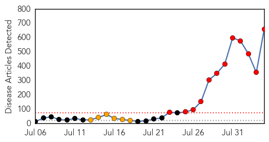
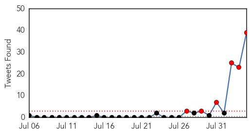
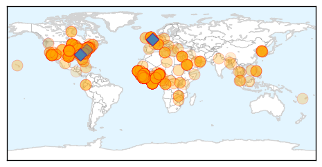

Ebola
30-Day Web Trend
12 alerts, 6 warnings

30-Day Twitter Trend
8 alerts, 0 warnings

Article Locations
Article Confidences
Top Articles:
- 1.000
- Ebola virus scare puts India on high alert
- 1.000
- Doctors: 'Odds are' NYC patient not carrying Ebola
- 1.000
- Ebola Death Toll Almost 900
- 1.000
- Ebola Death Toll Almost 900
- 1.000
- Ethiopia sets up anti-Ebola committee
- 1.000
- East Tennessee doctor quarantines himself after work with Ebola patients
- 1.000
- West Africa: UNofficial unveils $100 million Ebola help plan
- 1.000
- Ebola death toll rises to 887 – WHO
- 1.000
- Ebola outbreak: US warns disease remains out of control as American aid worker returns for treatment
- 1.000
- Ebola Virus Disease With a Recent Outbreak in West Africa, a Review of Literature by Gunwant S Dhaliwal, MD @ Primary Care Walk in Clinic, New Port Richey, Florida
- 1.000
- Marsh: How the Ebola virus epidemic has become a corporate risk concern
- 1.000
- Scientists: Ebola unlikely to spread here, but they're ready if it does
- 1.000
- Ebola outbreak: Specialist cautions against 'irrational fear' of disease spreading to Pa.
- 1.000
- Man back from Ebola-stricken country is quarantined at NYC hospital
- 1.000
- Has Ebola reached New York?
- 1.000
- Ebola Outbreak in West Africa: US to Send 50 Health Experts to Help Fight Ebola in West Africa
- 1.000
- Can Ebola Spread To The US? Here’s The Worst Case Scenario If The Virus Made It Over The Atlantic
- 1.000
- American Patrick Sawyer Infected Four In Nigeria, Death Toll Now 887
- 1.000
- Woman Dies After Flying From Sierra Leone Into Gatwick Airport
- 1.000
- Ebola: Gatwick scare for 'petrified' staff and passengers after woman on west Africa flight collapses and dies
- 1.000
- How The Ebola Outbreak Became The Deadliest In History
- 1.000
- Second American Sickened With Virus Scheduled to Leave Liberia on Tuesday
- 1.000
- WHO chief says Ebola can be stopped
- 1.000
- How the recent Ebola epidemic turned into the worst yet
- 1.000
- Five crucial facts about the largest Ebola outbreak yet
- 1.000
- The Ebola Virus
- 1.000
- U.S., Foreign Health Workers to Flock to West Africa Amid Ebola Crisis
- 1.000
- 2nd American Ebola patient en route to U.S. for care
- 1.000
- Killer virus
- 1.000
- 'Very unlikely' patient has Ebola at Mount Sinai Hospital in NYC
- 1.000
- 2nd American Ebola patient en route to U.S. for care
- 1.000
- Doctors: Ebola outbreak unlikely in Pennsylvania - Bucks County Courier Times: Pennsylvania News
- 1.000
- Ebola virus: Emergency appeal launched for victims by British Red Cross
- 1.000
- Ebola crisis: World Bank announces $200m emergency fund
- 1.000
- Ebola crisis: Nigeria records second case in Lagos
- 1.000
- Ebola outbreak: Sierra Leone, Liberia deploy troops as death toll reaches 887
- 1.000
- Ebola outbreak: Sierra Leone, Liberia deploy troops as death toll reaches 887
- 1.000
- Ebola death toll hits 887, says WHO
- 1.000
- EDITORIAL: Stopping Ebola
- 1.000
- Man tested for Ebola in NYC, 50 US experts head to West Africa to contain outbreak — RT USA
- 1.000
- Ebola: government response - Liberia
- 1.000
- Setback In Ebola Battle As Death Toll Rises
- 1.000
- Lagos Panics As Ebola Spreads In West Africa
- 1.000
- Mount Sinai Hospital Testing Patient for Ebola
- 1.000
- No repatriation plan yet for Filipinos in Ebola-hit countries – DFA
- 1.000
- The Chosun Ilbo (English Edition): Daily News from Korea
- 1.000
- Ebola virus disease claims 887 lives in West Africa
- 1.000
- HMC: Qatar taking precautions to protect against deadly Ebola virus
- 1.000
- Minnesota Liberians struggle to get loved ones out of Ebola-stricken areas
- 1.000
- Mount Sinai patient who traveled to West Africa tested for Ebola virus
Showing top 50 articles...
Top Tweets:
- 0.988
- RT: Pic of the Day: Ebola Virus Colorized scanning electron micrograph of filamentous Ebola virus… http://t.co/YBN4OmlWpw
- 0.975
- RT: gente morre de malária aqui ainda e a mulé diz que o ebola não tem perigo pra essas bandas... ãhã
- 0.927
- RT: Questions about Ebola outbreak in West Africa? FAQs, travel guidance, info on past outbreaks, & other updates at http://…
- 0.923
- - also transmit ebola (2/2)
- 0.906
- - Infection of pigs with ebola Reston is believed to have occurred through their eating ebola infected fruits visited by bats.
- 0.897
- RT: Adebayor has malaria not Ebola?!
- 0.848
- RT: commonest causes of fever in someone returning from Africa are malaria typhoid , not ebola or lassa
- 0.838
- RT: amigas ebola é tipo malária que vc pode pegar várias vezes ou tipo é uma vez só mesmo cada um tem uma chance só?
- 0.837
- RT: Person with a fever from Africa with no physical contact with Ebola, sick chimpanzee, bat cave: will likely have malaria or …
- 0.837
- - Ebola virus is relatively stable over time.
- 0.835
- RT: YaQueLesBabtousPour filer des sacs de riz aux africains qui crèvent de faim, les soigner du sida , d'ebola et de la m…
- 0.806
- .@MaliykaisHealth - CDC ebola outbreak site has been active for several months. http://t.co/S41nWSVm1p CDCchat
- 0.751
- RT: Gatwick passenger death: sad death of passenger after flight from The Gambia raised Ebola fears. Precautionary Ebola tests wer…
- 0.741
- RT: i thought they had brought malaria over here but it was the ebola virus.
- 0.739
- RT: Aha, Medien haben sich nach 3 Monaten mit Ebola infiziert, vergessen aber, dass es über 1000 Mal mehr Tote z.B. durch Grippe …
- 0.728
- Is there any cure or anything to prevent the ebola virus? There is no cure at the time. CDCchat
- 0.725
- RT: As of July 30, 2014, a total of 1440 suspect and confirmed cases of Ebola and 826 deaths have been reported. CDCChat
- 0.718
- RT: Africa so fucked up bruh. Lions, Hyneas, Children, AIDs, Ebola, Heat, Malaria, Hunger. Slavery might have been a bless…
- 0.717
- RT: Weetje: we zitten aan ~1000 Ebola-doden of ongeveer 0,14% van het jaarlijks aantal malaria-slachtoffers
- 0.672
- RT: Welcome to today’s CDCchat on Ebola. Thanks for joining us! We know you have many questions about Ebola.
- 0.668
- RT: @mediarequentada não, era malaria (não quero mais ter ebola)
- 0.660
- RT: Stop with the ebola fear mongering people! More than 120.000 people died of measles in 2012. And malaria kills even mor…
- 0.637
- RT: .@petelasvegas Ebola infected people infectious for short time (days not years) so less opportunity for transmission than HIV i…
- 0.617
- RT: STOP THE FEAR: The Ebola Virus has come the way the Malaria Parasite came years back and was eventually conquered TrustGod
- 0.610
- RT: Ebola is a threat to kenyan people coz health facilities are broke nd outdated....if people cant get remedy for malaria.…
- 0.607
- RT: @Maitre_Eolas J'avais opposé la malaria à ceux qui me traitaient de monstre sans coeur face à Gaza. Ebola c'est cool aussi.
- 0.600
- RT: Smart move. Border closures won't work: Nigeria Not Considering Border Closure Over Ebola http://t.co/jAz64cWfyy Ebola
- 0.599
- .@ibbchris - Stigma is often part of ebola outbreaks, and health education helps to eliminate it. CDCchat
- 0.587
- RT: Bingo do diagnostico: o cara que ta internado com suspeita de ebola na verdade esta com a) malaria b) virose c) ressaca d) …
- 0.580
- .@Sibtain1314 - Ebola early symptoms: fever, diarrhea, vomiting. Later symptoms can include multi-organ failure leading to death. CDCchat
- 0.554
- RT: .@OpheliaInWaders Poor health care, first time having Ebola in this region, mobile rural population, and not well prepared. C…
- 0.549
- Oy. “Ebola terror at Gatwick as passenger collapses and dies getting off Sierra Leone flight” http://t.co/1s4WHSTSue
- 0.548
- .@CoquiNegra - Ebola infection can only be confirmed by lab diagnostic testing. CDCchat
- 0.537
- RT: Have questions about Ebola? Join disease detectives for special CDCchat TODAY, 8/4, 4-5PM ET.
- 0.537
- RT: Have questions about Ebola? Join disease detectives for special CDCchat TODAY, 8/4, 4-5PM ET.
- 0.537
- RT: Have questions about Ebola? Join disease detectives for special CDCchat TODAY, 8/4, 4-5PM ET.
- 0.535
- RT: Ebola: As Other Doctors Die, Heading Straight Into The Outbreak To ... http://t.co/a7yYje6Etc
- 0.533
- RT Dr. Roseda Marshall, Liberian med leader, says MDs+RNs still don’t have enough gloves to protect from Ebola.
- 0.526
- RT: Ebola's death toll in Africa is microscopic compared to preventable cases of AIDS and malaria. Maybe we should focus some e…
- 0.524
- RT: Ebola symptoms can take 2 -21 days to show. It usually start in the form of malaria or cold followed by Fever, Diarrhoea, V…
- 0.524
- RT: Ebola symptoms can take 2 -21 days to show. It usually start in the form of malaria or cold followed by Fever, Diarrhoea, V…
- 0.508
- RT: @raffaelebarki chiara e tonda dichiarazione che ebola non ha lo stesso impatto sulla salute pubblica dell' HIV e mal…
- 0.505
- RT: Ebola anecdote probably just as cheap as the malaria vaccine smh
- 0.501
- RT: “@bonabdullah: well 'Ebola' coming from west Africa , 'Drug resistant malaria' coming from east Africa, tbh God is all we hav…
Chikungunya
30-Day Web Trend
1 alerts, 0 warnings

30-Day Twitter Trend
3 alerts, 0 warnings

Article Locations

Article Confidences

Top Articles:
Top Tweets:
- 0.898
- RT: Droit à la santé: Fièvre jaune, Paludisme,Malaria,Ebola,Chikungunya,grippe aviaire,VIH/SIDA… Urgence&danger! Penser au…